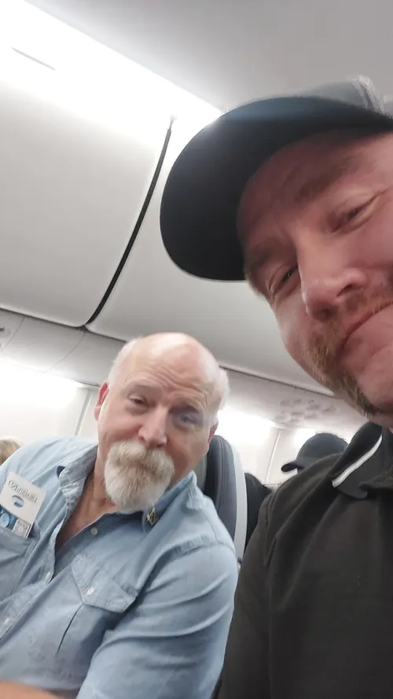
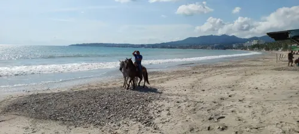
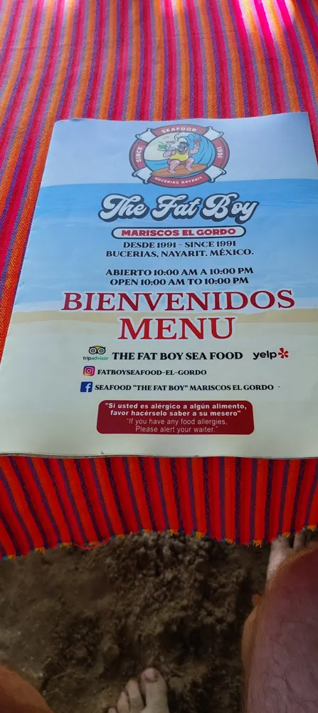
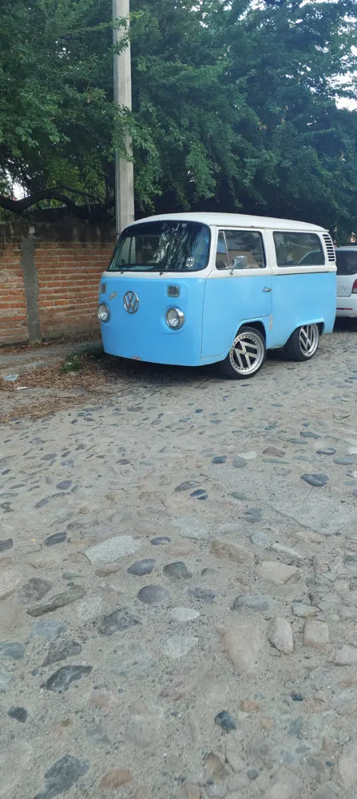
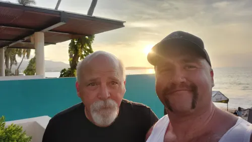
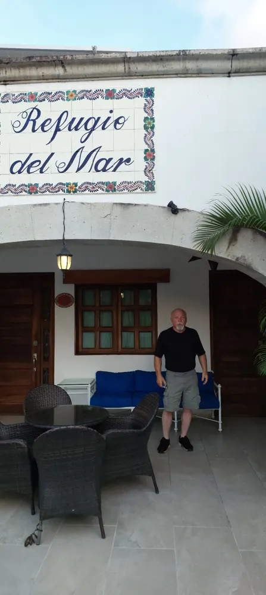
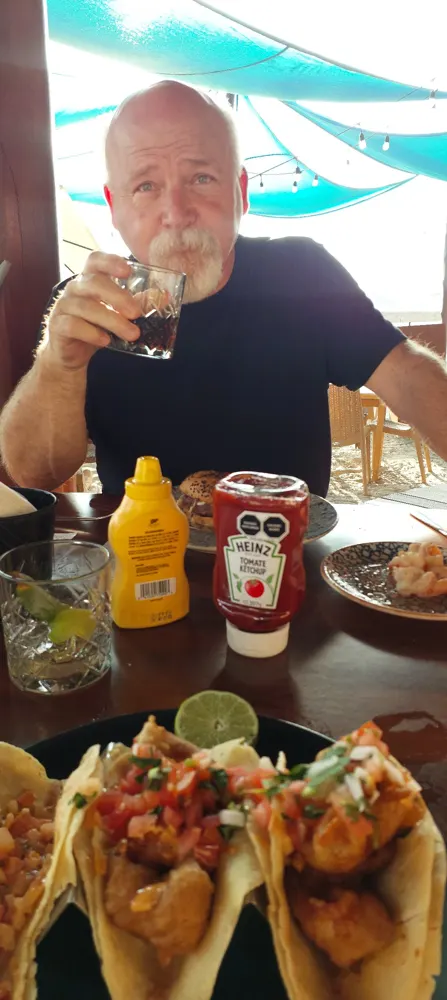
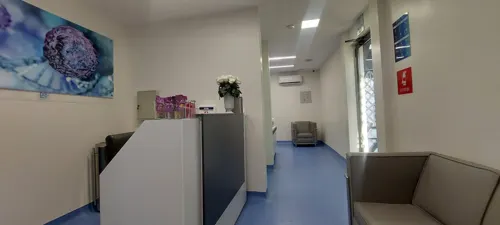
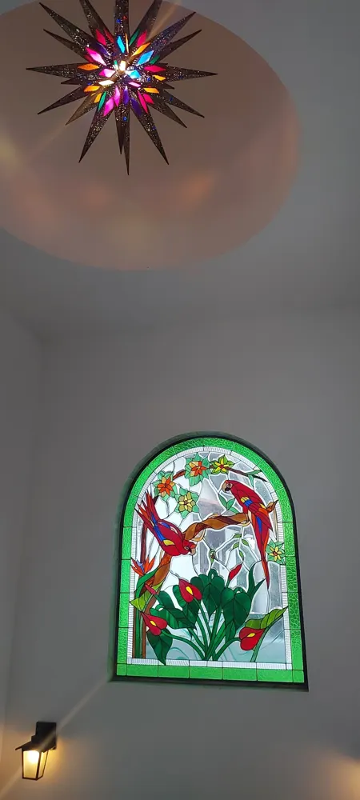

October 2025 Mexico
October 2025

In October 2025 we went to Mexico for stem cell injections for heart treatment for George Latta Sr.
Away from the clinic there was time along the beach, in Bucerías, and for good food.




















